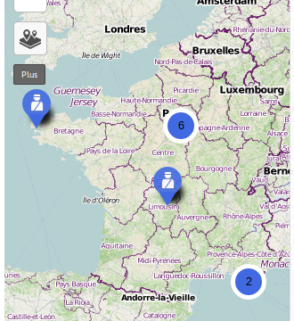
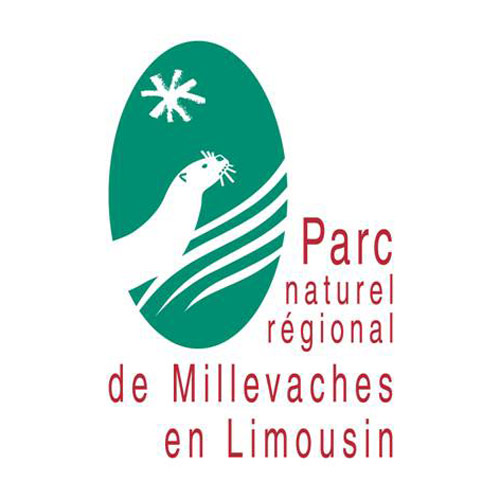
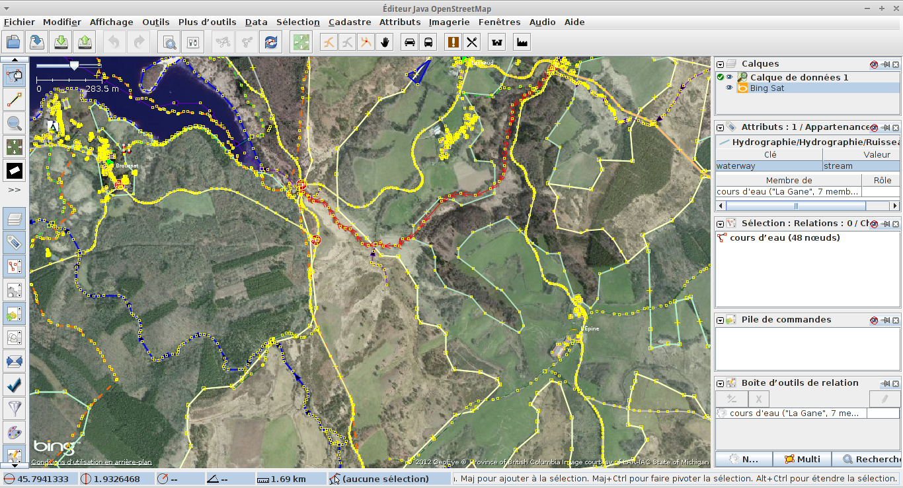
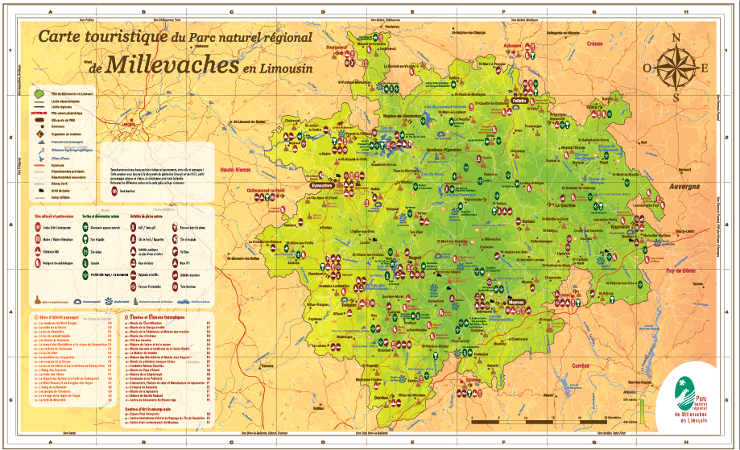
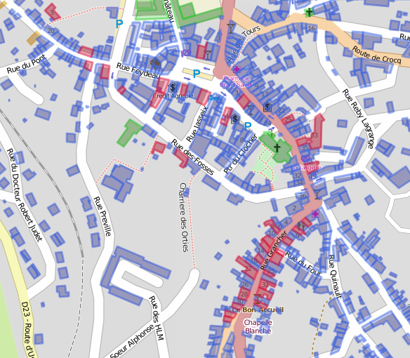
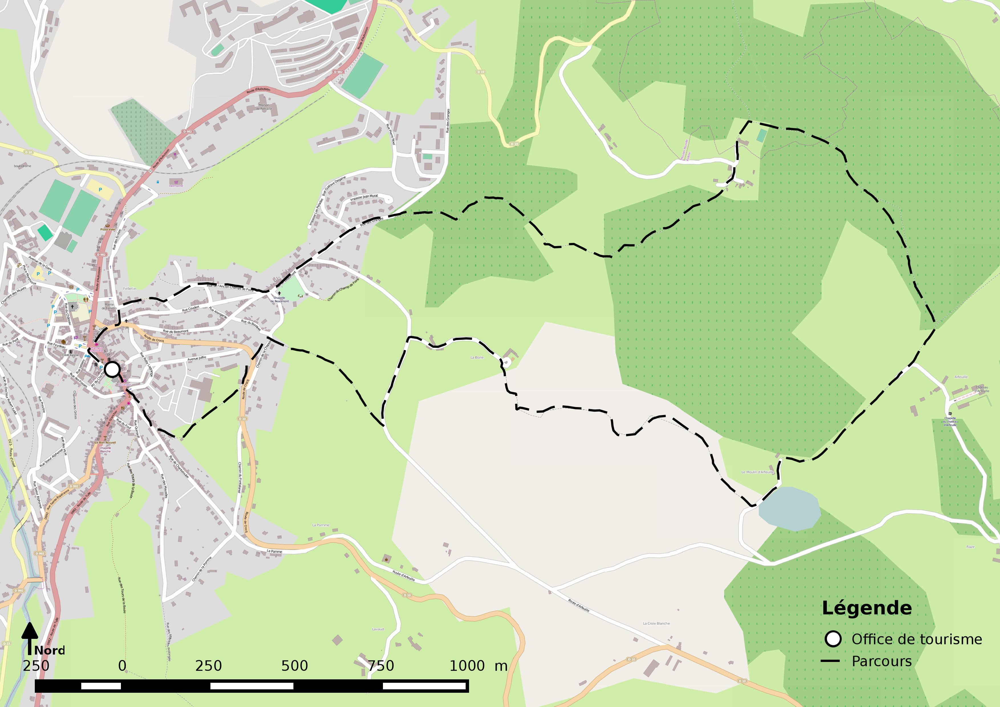
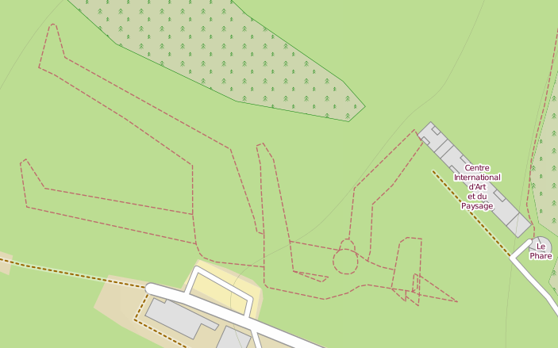

Zones blanches,
osm en campagne
L'expérience OSM sur le territoire du PNR de Millevaches en Limousin

Avril 2014 SOTM-FR
Pour ces 20 minutes
Le Plateau de Millevaches / les Millevaches
L'expérience au sein du PNR
Hors les murs de l'institution
Le plateau
Au sein du Parc naturel régional

Carte touristique
Plateforme cartographique
Un Parc naturel Régional
expérimenter
Peut-on travailler avec OpenStreetMap ?
Est-ce uniquement réservé aux villes ?
Produire une carte touristique avec OpenStreetmap
cahier des charges
IGN R500
BD CARTHAGE
SRTM
Conserver l'aspect
Mettre à jour
certains figurés
contribution
Exploitation de données
Nouvelle Carte
Que retenir ?
Viable pour notre usage
Effort modéré
Processus de fabrication mieux contrôlé
Double saisie
R500 et BD Carthage en Open Data
Une plateforme cartographique pour les habitants
Appropriation du territoire par ses habitants
Une dynamique locale singulière
Un réseau d'acteurs en lien avec l'économie sociale et solidaire
Un intérêt à mettre en écho ces initiatives par la carte
S'organiser et se rendre accessible
Quotidien
Écologie
L'accueil
Au bout du compte...
Pas de suivi par le Parc
Une expérience partagée
Hors les murs
Cartographie des habitations vides
Liens avec des Offices de tourisme
Mise en lien avec des démarches artistiques
Fin de la présentation

Ce(tte) œuvre est mise à disposition selon les termes de la Licence Creative Commons Attribution - Partage dans les Mêmes Conditions 4.0 International
Ressources
Mentions
Social Network designed by from The Noun Project
- designed by Brennan Novak from The Noun Project
Speaker designed by Harold Kim from The Noun Project
Network designed by Bruno Castro from the Noun Project